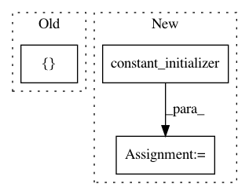

d42df89c351e0c2a031ea3a9ae17fb7b844e7b79,tensorlayer/layers.py,BatchNormLayer,__init__,#BatchNormLayer#Any#Any#Any#Any#Any#Any#Any#Any#,1680
Before Change
return tf.identity(mean), tf.identity(variance)
if is_train:
is_train = tf.cast(tf.ones([]), tf.bool)
else:
is_train = tf.cast(tf.zeros([]), tf.bool)
After Change
trainable=False,)// restore=restore)
moving_variance = tf.get_variable("moving_variance",
params_shape,
initializer=tf.constant_initializer(1.),
trainable=False,)// restore=restore)
//// 3.
// These ops will only be preformed when training.
mean, variance = tf.nn.moments(self.inputs, axis)
try: // TF12
update_moving_mean = moving_averages.assign_moving_average(
moving_mean, mean, decay, zero_debias=False) // if zero_debias=True, has bias
update_moving_variance = moving_averages.assign_moving_average(
moving_variance, variance, decay, zero_debias=False) // if zero_debias=True, has bias
// print("TF12 moving")
except Exception as e: // TF11
update_moving_mean = moving_averages.assign_moving_average(
moving_mean, mean, decay)
update_moving_variance = moving_averages.assign_moving_average(
moving_variance, variance, decay)
// print("TF11 moving")
def mean_var_with_update():
with tf.control_dependencies([update_moving_mean, update_moving_variance]):
return tf.identity(mean), tf.identity(variance)
// ema = tf.train.ExponentialMovingAverage(decay=decay) // Akara
// def mean_var_with_update():
// ema_apply_op = ema.apply([moving_mean, moving_variance])
// with tf.control_dependencies([ema_apply_op]):
// return tf.identity(mean), tf.identity(variance)
//// 4. behaviour for training and testing
// if not is_train: // test : mean=0, std=1
// // if is_train: // train : mean=0, std=1
// is_train = tf.cast(tf.ones([]), tf.bool)
// else:
// is_train = tf.cast(tf.zeros([]), tf.bool)
//
// // mean, var = control_flow_ops.cond(
// mean, var = tf.cond(
// // is_train, lambda: (mean, variance), // when training, (x-mean(x))/var(x)
// is_train, mean_var_with_update,
// lambda: (moving_mean, moving_variance)) // when inferencing, (x-0)/1
//
// self.outputs = act( tf.nn.batch_normalization(self.inputs, mean, var, beta, gamma, epsilon) )
if is_train:
mean, var = mean_var_with_update()
self.outputs = act( tf.nn.batch_normalization(self.inputs, mean, var, beta, gamma, epsilon) )
else:
// self.outputs = act( tf.nn.batch_normalization(self.inputs, ema.average(mean), ema.average(variance), beta, gamma, epsilon) ) // Akara
self.outputs = act( tf.nn.batch_normalization(self.inputs, moving_mean, moving_variance, beta, gamma, epsilon) ) // Simiao
// self.outputs = act( tf.nn.batch_normalization(self.inputs, mean, variance, beta, gamma, epsilon) )
// variables = tf.get_collection(TF_GRAPHKEYS_VARIABLES, scope=vs.name) // 8 params in TF12 if zero_debias=True
In pattern: SUPERPATTERN
Frequency: 4
Non-data size: 3
Instances
Project Name: zsdonghao/text-to-image
Commit Name: d42df89c351e0c2a031ea3a9ae17fb7b844e7b79
Time: 2017-01-18
Author: dhsig552@163.com
File Name: tensorlayer/layers.py
Class Name: BatchNormLayer
Method Name: __init__
Project Name: GPflow/GPflow
Commit Name: c30478e278c4b6fe66a8c00784cbdaa22372e960
Time: 2017-09-29
Author: art.art.v@gmail.com
File Name: gpflow/params.py
Class Name: Param
Method Name: _build_parameter
Project Name: NifTK/NiftyNet
Commit Name: d8312d9721ae182a1bdd48ba1d59ebbc4a95ef4c
Time: 2017-12-22
Author: wenqi.li@ucl.ac.uk
File Name: niftynet/network/interventional_dense_net.py
Class Name: INetDense
Method Name: __init__
Project Name: OpenNMT/OpenNMT-tf
Commit Name: 963710e3d38c9ad1d8b8cc1419a3bd1b3dddde1f
Time: 2018-11-09
Author: guillaumekln@users.noreply.github.com
File Name: opennmt/utils/optim.py
Class Name:
Method Name: optimize